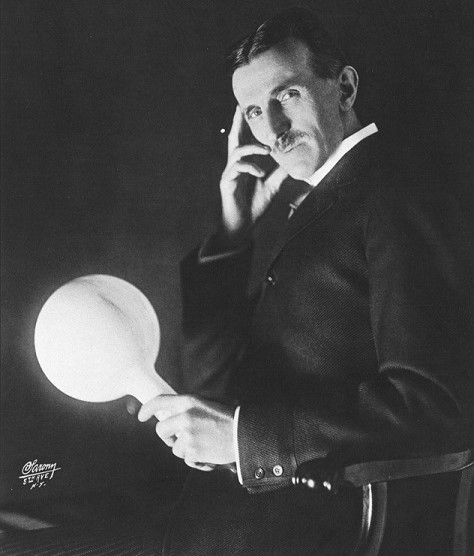

Nikola Tesla
L'homme qui a inventé le vingtième siècle

Tesla tenant un phosphore gazeuse enduit ampoule sans fil qu'il a développé
en 1890, un demi-siècle avant l’utilisation des lampes fluorescentes.
Voici la chronologie de sa vie
- 1856 - Nikola Tesla naît dans la nuit, à Smiljan, dans les confins militaires de l’Empire d’Autriche6. Il naît lors d'une nuit d'orage très violente. Sa grand-mère interprète cela en disant que l'enfant serait l'« enfant de la nuit », alors que sa mère au contraire déclare qu'il serait l'« enfant de la lumière »
- 1861 - Tesla fréquente l'école primaire de Smiljan où il étudie l'allemand, l'arithmétique et la religion.
- 1862 - La famille Tesla s'installe dans la localité voisine de Gospić, où son père etait curé de paroisse, et il y termine l'école primaire, puis le collège.
- 1870 - Tesla s'installe à Karlovac pour y suivre les cours au lycée, où il termine un cursus de quatre ans en trois ans.
- 1873 - Tesla retourne à Smiljan et peu après son arrivée, il contracte le choléra, reste alité pendant neuf mois et frôle la mort à plusieurs reprises.... Le père de Nikola, dans un moment de désespoir, et bien qu'il veut qu'il entre dans la prêtrise, promet de l'envoyer dans la meilleure école d'ingénieurs s'il se remet de la maladie
- 1874 - Tesla échappe au service militaire obligatoire dans l'armée austro-hongroise à Smiljan en s'enfuyant au sud-est de Lika à Tomingaj, près de Gračac. Là, il explore les montagnes en tenue de chasseur, lit de nombreux livres et conçoit des inventions qu'il juge lui-même de « délirantes ». Selon Tesla, ce contact avec la nature l'a rendu plus fort, tant physiquement que mentalement.
- 1875 - Tesla s'inscrit à l'université technique de Graz grâce à une bourse de la Frontière militaire. Il s’enrôle dans les départements de physique et mathématiques dans l'idée de devenir plus tard professeur. Durant sa première année il fonde un club culturel serbe.
- 1878 - Tesla quitte Graz, ne contacte plus sa famille et déménage à Maribor où on l’emploie comme assistant ingénieur. Il passe alors ses soirées dans un pub, le Paysan Heureux, à jouer aux cartes.
- 1879 - il se trouvait à Maribor; où il avait été arrêté pour vagabondage. Après la mort de son père, Tesla renvoyé à Gospić, continue de participer à des jeux d'argent et enseigne dans son ancienne école. Avec l'aide de sa mère, il parvient à mettre de côté son addiction et accepte finalement de reprendre ses études à Prague, ses oncles maternels lui fournissant les fonds nécessaires.
- 1880 - alors que ses oncles ont arrêté de lui envoyer de l'argent, Tesla quitte Prague pour Budapest.Tesla réalise alors sa première réelle invention, un ancêtre du haut-parleur qu'il n'a jamais breveté ni exposé publiquement.
- 1881 - Tesla est affecté par une étrange maladie que les médecins n'arrivent pas à diagnostiquer. Il est possible que cette maladie soit une dépression nerveuse due au peu d'intérêt que les gens portent à ses nouvelles inventions.
- 1882 - Tesla est enfin engagé par Ferenc Puskás pour aider à développer le réseau téléphonique de Budapest. C'est alors que Tesla invente de nouveaux répéteurs et amplificateurs pour téléphone.
- 1883 - Tesla est ensuite employé par l'entreprise d'Edison en France et en Allemagne dans plusieurs stations d'éclairage. À Strasbourg et à Paris, Tesla tente à plusieurs reprises de trouver des investisseurs mais personne ne semble vraiment s'intéresser à ses projets.
- 1884 - Tesla émigre aux États-Unis et commence à travailler presque immédiatement chez Machine Works dans le Lower East Side de Manhattan, aux côtés d'une vingtaine d'« ingénieur de terrain » qui peinent à mettre en place l'usine électrique de la ville
- 1885 - Tesla démissionne. L'événement qui a précipité son départ n'est pas connu. Il s'agit peut-être d'une prime qu'il n'a pas reçue, soit pour avoir conçu de nouveaux générateurs, soit pour le système d'éclairage à l'arc qui avait été mis de côté
- 1886 - L'inventeur ne trouve plus de travail comme ingénieur et multiplie les petits boulots, tels que réparateur de circuits électriques ou comme ouvrier dans une société qui creuse des fossés pour 2 $ par jour (57 $ en 2020).
- 1887 - Un groupe de financiers (l'avocat Charles F.Peck et le directeur de la Western Union Alfred S. Brown), conscients du potentiel économique de la proposition de Tesla sur le courant alternatif, offre à celui-ci la possibilité de fonder sa propre société
- 1888 -Il dispose d'un laboratoire et peut enfin construire la génératrice à courant alternatif qu'il présente à l'American Institute of Electrical Engineers Westinghouse embauche Tesla pendant un an, pour un salaire mensuel de 2 000 $, comme consultant des laboratoires de la Westinghouse Electric & Manufacturing Company
- 1893 - La compagnie de Westinghouse obtient le contrat d’installation de toute l’infrastructure électrique des États-Unis et, rapidement, les États-Unis utilisent exclusivement le courant alternatif préconisé par Tesla
- 1897 - Westinghouse explique ses difficultés financières à Tesla en termes crus, l'avertissant que, si les choses continuent ainsi, il aurait à « traiter avec les banquiers » pour continuer à percevoir ses redevances. Westinghouse convainc finalement Tesla de renoncer à ses royalties et lui rachète ses droits et ses brevets pour une somme de 216 000 dollars
- 1898 - Tesla dépose le brevet US 613809 A107 intitulé Méthode et appareillage pour un mécanisme de contrôle de navires et véhicules. En décembre de la même année, au cours d'une foire dédiée à l'électricité au Madison Square Garden, il fait la démonstration d'un bateau radio-commandé qu'il surnomme « teleautomaton »
- 1901 - il fait construire la tour de Wardenclyffe qui doit lui permettre de rattraper le retard pris dans sa compétition avec Guglielmo Marconi qui a réussi le 12 décembre 1901 la première transmission radio transatlantique. Parce qu'il n'obtient aucun résultat commercialement probant, ses investisseurs le lâchent les uns après les autres.
- 1917 - La tour est détruite. Il vit désormais reclus dans une chambre de l'hôtel New Yorker, refusant toute charité mais recevant de la Westinghouse Electric & Manufacturing Company un salaire mensuel de 125 $ pour continuer ses différentes recherches
- 1928 - Tesla dépose son dernier brevet, un biplan à décollage et atterrissage verticaux.
- 1937 - Voulant éviter un taxi, Tesla est victime d'une mauvaise chute alors qu'il fait son trajet régulier vers la cathédrale et Central Park où il a l'habitude de nourrir les pigeons et de les recueillir dans son hôtel.
- 1943 - Perclus de TOC, insomniaque chronique, il s'éteint le 7 janvier dans sa chambre d'hôtel à New York, seul, sans un sou et couvert de dettes, laissant derrière lui plus de 300 brevets et la réputation de savant génial, visionnaire et à moitié fou. Il reçoit le 17 janvier des funérailles nationales dans la cathédrale Saint-Jean le Théologien de New York, regroupant 2 000 personnes.
- 1952 - Son neveu Sava Kosanović obtient que sa succession entière (manuscrits originaux, milliers de lettres, de photographies et la plupart de ses inventions) soit expédiée à Belgrade.
- 1957 - Après un long procès, ce même neveu réussit, à récupérer l’urne funéraire de son oncle. L’urne et les documents sont aujourd’hui au musée Nikola-Tesla à Belgrade en Serbie.
- "Je me fiche qu’ils aient volé mon idée…
Je m’inquiète du fait qu’ils n’en aient pas eux-mêmes."
-- Nikola Tesla
En savoir plus sur Nikola Tesla vous pouvez lire ici